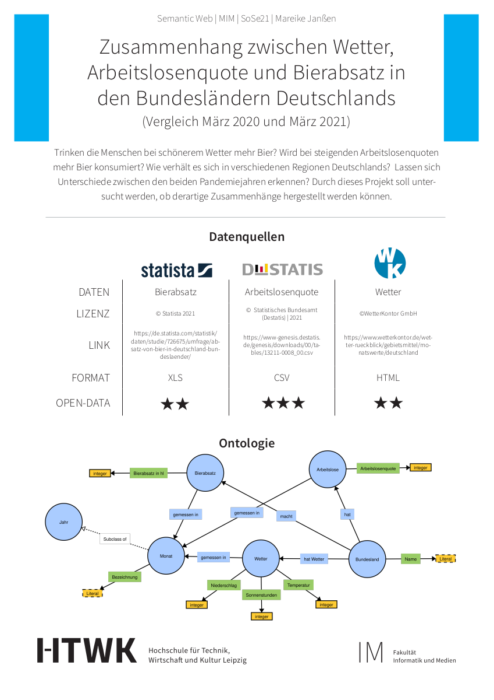

Mareike Janßen
Trinken die Menschen bei schönerem Wetter mehr Bier? Wird bei steigenden Arbeitslosenquoten mehr Bier konsumiert? Wie verhält es sich in verschiedenen Regionen Deutschlands? Lassen sich Unterschiede zwischen den beiden Pandemiejahren erkennen? Durch dieses Projekt soll untersucht werden, ob derartige Zusammenhänge hergestellt werden können.
